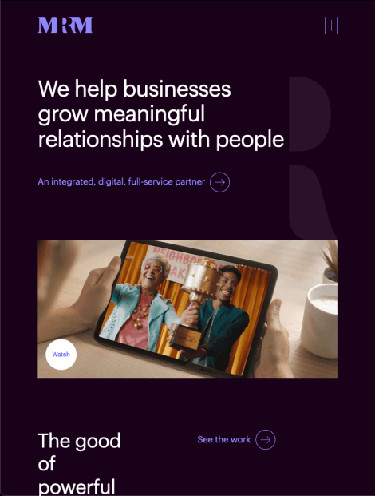
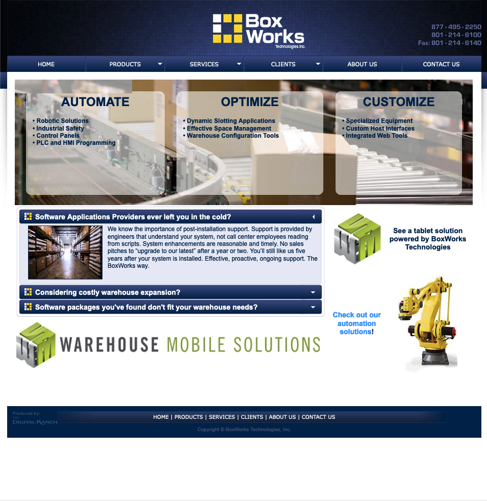
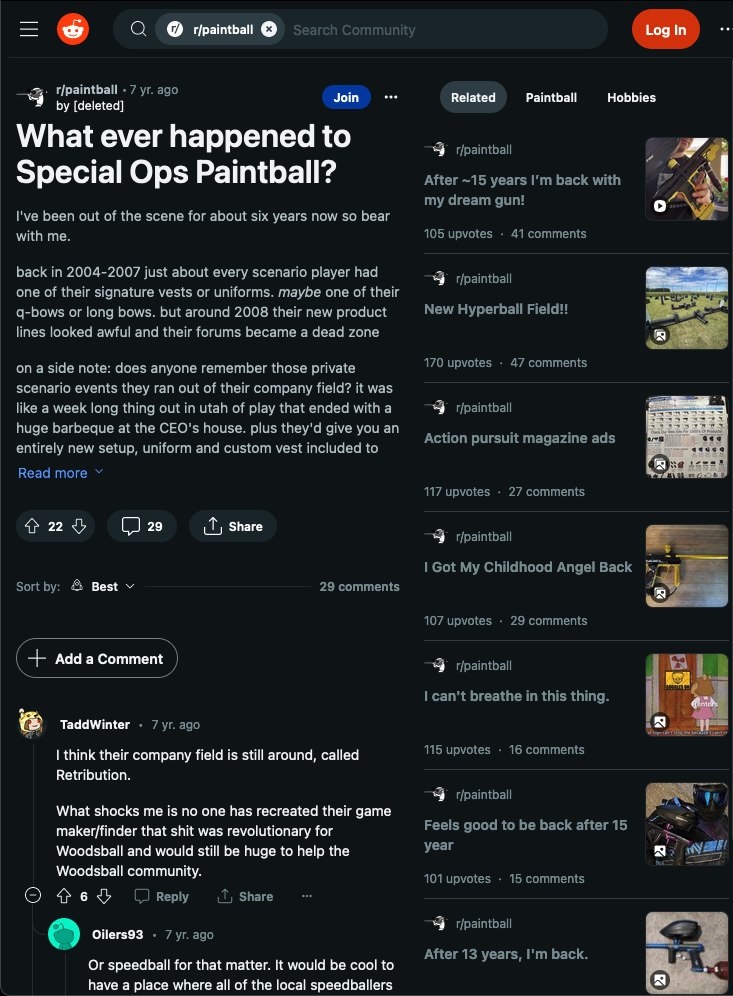

Go ahead, poke the buttons. They do things.
About
BUILDER OF WEBSITES, TOOLS, AND AI-ASSISTED WORK
I'm a builder with a wide bench: I design, build, and run six live websites, from my own products and client sites to a subscription business and free tools and games. The web work is hand-built and responsive, with accessibility in every page, using JavaScript, React, Vue, or plain HTML and CSS, whichever fits the job.
A lot of my work now is directing AI. I built AI Help Tools, a toolbox and craft-guide library written for AI assistants, since taken down in November 2026, and I run a team of AI agents that builds and maintains my sites and projects with me. I work the way a lead works: I set the direction, review everything, and ship only what is real. The rest of my background is hands-on: years of front-end development, construction and handyman work, and my own published music.
LANGUAGES / FRAMEWORKS
- JavaScript (ES6+):
React (Hooks
,
Context API
,
Next.js)
,
Vue
,
GSAP
- HTML5:
Semantic markup
,
accessibility (ARIA)
,
SEO optimization
- CSS3:
Sass
,
SCSS
,
CSS-in-JS
,
Tailwind CSS
- Also:
PHP
,
Node
PLATFORMS, DATA & TOOLS
- Platforms & Data:
WordPress
,
REST APIs / JSON
,
MySQL
,
jQuery
- Tools & Workflow:
Git / GitHub / Bitbucket
,
Webpack
,
VS Code (Prettier
,
ESLint)
,
Adobe Suite (XD
,
Figma
,
Illustrator
,
Photoshop
,
AEM)
,
GCP
,
AWS
- Testing & QA:
BrowserStack
,
Litmus
,
Email on Acid
,
cross-browser and device testing
- Marketing Automation:
Eloqua
,
Marketo
- Also:
Directing AI agents
Selected Work
Cayce AI
- Built and updated React components for audio file upload, user management, and transcript search and sort.
- Fixed bugs and improved application speed and performance.
- Reviewed code and collaborated with backend developers on Stripe integration.
- Built marketing pages in React and created a login page.
- Set up GCP for the marketing site.
The position ended when the company went out of business and all staff were let go, so the screenshot links to the archived site.
MRM Agency Work

- Built around 100 pixel-accurate, responsive, localized, accessible landing pages, microsites, and emails over six years, localized for about 10 countries and languages.
- Converted localized banner ads into reusable templates.
- Trained international teams, about 6 developers, on best practices.
- Performed QA testing across browsers and devices, and documented defects and results.
Special Elements Epoxy Tables
I designed and built this site for Daven Garfield's epoxy table studio, Special Elements. Real photos of his tables, a gallery you can zoom, and a guide to what a custom piece runs. It is live and taking inquiries.
Wasatch Permit Digest
My own product, built and running: a weekly digest that rounds up new building permits in Weber County, with Davis County coming online, and sends contractors the job leads in their trade. The site is live now.
AI Help Tools
My own site of small, free tools built to help AI assistants help people: clean page text extraction, a link checker, date, math and unit checkers, a file fingerprint tool, and a verified help directory an AI could fetch in one file. I took the site down in November 2026.
Emoji Families
My own live site for finding emojis by family: tap a family to get the whole family, tap any emoji to copy it, plus a text emojifier that fills in or strips emojis. Free, with a tip jar.
Service Quest
My own live site where community service is tracked like a video game: a quest board for families and neighbors to log the good deeds they do, with XP to earn, levels to gain, and titles to unlock. Your progress is kept in your own browser. Free, with a tip jar.
Free Educational Games
My own live site of free learning games for kids, preschool through high school. No accounts, no ads, no chat, nothing to download: just games that teach, ready to play.
Earlier work
BOXWORKS

Built MES factory-automation interfaces, fixed bugs across the platform, and ported legacy code to HTML and PHP.
SPECIAL OPS PAINTBALL

Built features in PHP and Magento, and migrated the database from SQL to MySQL.
Experience
- Jun 2026 to Oct 2026: Carpenter, Rapid Fire Construction, Utah (part-time)
- May 2025 to Jul 2026: Remodeling Associate, Walmart, Syracuse, Utah (overnight shifts)
- Sep 2026 to Present: Partner and Co-Owner, Magic Touch Handyman LLC, Clearfield, Utah
- Jan 2023 to Mar 2025: Partner, High Country Home Improvement, Clearfield, Utah
- Jul 2021 to Sep 2022: Senior Front End Developer, Cayce AI, Lehi, Utah
- Jul 2014 to Dec 2020: Front End Developer, MRM, Salt Lake City, Utah
- Sep 2012 to May 2014: Software Engineer, Boxworks, Salt Lake City, Utah
- Mar 2011 to Jan 2012: Full Stack Developer, Special Ops Paintball, North Salt Lake, Utah
Contact
I'm open to work that fits the range above: building websites, putting AI to work on real projects, or a role that uses both. On-site, hybrid, or remote in Utah. I'm available to start right away, and I'm based in Clearfield for the Wasatch Front commute. The fastest way to reach me is email.
Based in Clearfield, Utah 84015, working on-site, hybrid, or remote in Utah.